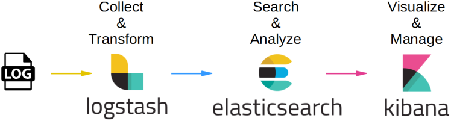

Monitoring
Avec encore quelques jours devant nous, il n'est pas impossible que notre applicaton finisse par grossir et devenir utile.
Elle finira en production où elle commencera une deuxième vie, loin de nous... vraiment ?
Continuous
Le cycle de construction et de livraison de logiciel évolue constamment.
Il y a longtemps, on livrait sur un support physique (disquette, CD...).
L'intégration (l'assemblage de toutes les parties du produit final) pouvait prendre des semaines, voire des mois.
L'intégration continue est une pratique qui vise a produire le logiciel très régulièrement, potentiellement après chaque commit.
Le déploiement continu vise à mettre en production chaque incrément logiciel.
A peine notre code sera mis en production que de nouvelles demandes émaneront pour le faire évoluer.
Il n'y aura donc pas une mise en production mais de nombreuses mises en production.
DevOps
Habituellement, le cycle de vie d'un logiciel est divisé en 2 :
- Le build : la construction du code
- Le run : la surveillance du code qui tourne
Cela correspond à 2 philosophies différentes : apporter du changement vs garantir la stabilité.
Pourtant, ces 2 approches doivent collaborer afin de répondre aux besoins.
La construction d'une culture commune entre les devs et les ops se nomme DevOps.
DevOps
Apparu autour de 2007 en Belgique avec Patrick Debois, le mouvement Devops se caractérise principalement par la promotion de l'automation et du suivi (monitoring) de toutes les étapes de la création d'un logiciel, depuis le développement, l'intégration, les tests, la livraison jusqu'au déploiement, l'exploitation et la maintenance des infrastructures. Les principes Devops soutiennent des cycles de développement plus courts, une augmentation de la fréquence des déploiements et des livraisons continues, pour une meilleure atteinte des objectifs économiques de l'entreprise.
On représente alors le cycle de vie d'un logiciel, non plus comme une chaîne de montage, mais un mouvement continu.

En livrant un travail de qualité, les développeurs simplifient le travail des ops.
Actuators
Le monitoring vise à connaitre, en permanence, l'état de fonctionnement des applications.
Une première approche consiste à interroger l'application elle même sur son état.
Dans ce cadre, spring boot propose les actuators :
{kind=link}
➤ Commencez par rajouter la dépendance spring-boot-starter-actuator
implementation 'org.springframework.boot:spring-boot-starter-actuator'Par défaut, seuls /actuator/health and /actuator/info sont activés
➤ Redemarrez l'application
A la racine /actuator permet de voir les endpoints disponibles.
Les 2 endpoints suivants sont disponibles :
Pour le moment, ces 2 endpoints ne sont pas très bavards.
Tous les endpoints
Voici tous les endpoints possibles de base
- /auditevents – lists security audit-related events such as user login/logout. Also, we can filter by principal or type among others fields
- /beans – returns all available beans in our BeanFactory. Unlike /auditevents, it doesn't support filtering
- /conditions – formerly known as /autoconfig, builds a report of conditions around auto-configuration
- /configprops – allows us to fetch all @ConfigurationProperties beans
- /env – returns the current environment properties. Additionally, we can retrieve single properties
- /flyway – provides details about our Flyway database migrations
- /health – summarises the health status of our application
- /heapdump – builds and returns a heap dump from the JVM used by our application
- /info – returns general information. It might be custom data, build information or details about the latest commit
- /liquibase – behaves like /flyway but for Liquibase
- /logfile – returns ordinary application logs
- /loggers – enables us to query and modify the logging level of our application
- /metrics – details metrics of our application. This might include generic metrics as well as custom ones
- /prometheus – returns metrics like the previous one, but formatted to work with a Prometheus server
- /scheduledtasks – provides details about every scheduled task within our application
- /sessions – lists HTTP sessions given we are using Spring Session
- /shutdown – performs a graceful shutdown of the application
- /threaddump – dumps the thread information of the underlying JVM
Il est possible de choisir les endpoint actifs un par un, mais pour aller vite, on aussi tous les activer.
➤ Activez tous les endoints
management.endpoints.web.exposure.include=*Vous pouvez aller notamment voir les suivants :
- beans : tous les beans de l'application
- configprops : toute la configuration
- metrics : des metrics sur l'application
- /metrics/jvm.memory.used : notamment la mémoire actuellement utilisée
La plupart des données retournées par ces services sont destinées à être exploitées par des applications tierces.
Par exemple, le endpoint /prometheus (qui nécessite une dépendance micrometer-registry-prometheus) permet d'alimenter un serveur prometheus.
Custom Health Indicator
Le endpoint /health est extensible, on peut lui rajouter nos informations.
➤ Ajoutez le HealthIndicator suivant dans notre application :
@Component
class RandomHealthIndicator implements HealthIndicator {
@Override
Health health() {
int value = Random.newInstance().nextInt(2)
value == 1 ? Health.up().build() : Health.down().withDetails(['reason': 'pas de chance']).build()
}
}A présent notre application sur /health est UP par intermittence.
Mais où est passé notre message quand l'application est DOWN ?
L'endpoint a trois modes :
- NEVER : on affiche jamais les détails
- WHEN_AUTHORIZED : uniquement si on est connecté et autorisé
- ALWAYS : on affiche toujours les détails
➤ Configurer l'endpoint afin d'afficher toutes les informations :
management.endpoint.health.show-details=alwaysCette fois on a tout.
{kind=link}
On voit même l'état du disque et celui du connecteur mongodb.
Pour la suite, vous pouvez supprimer ce composant.
javamelody
javamelody est un outil qui permet de visualiser les métriques de l'application.
Cela n'a aucun rapport avec les actuators spring mais javamelody est plus visuel rapidement.
➤ Ajoutez le starter javamelody
implementation 'net.bull.javamelody:javamelody-spring-boot-starter:1.79.0'L'interface est disponible par défaut sur /monitoring
➤ Faites quelques requêtes sur les services et ensuite vous pouvez voir les appels sous javamelody.
Voici ce que cela donne sur rtl.fr par exemple.
{kind=link}
Chez moi, l'ajout de javamelody plante les tests, je rajoute donc la ligne suivante dans application-test.properties
spring.autoconfigure.exclude=net.bull.javamelody.JavaMelodyAutoConfigurationLogging
Une autre facette du monitoring concerne les logs.
Pour les logs, spring boot utilise logback.
La configuration de logback se fait au travers d'un fichier logback-spring.xml.
➤ Ajouter le fichier suivant dans src/main/resources
<?xml version="1.0" encoding="UTF-8"?>
<configuration>
<property name="LOGS" value="./logs" />
<!-- impression dans le terminal -->
<appender name="Console" class="ch.qos.logback.core.ConsoleAppender">
<layout class="ch.qos.logback.classic.PatternLayout">
<Pattern>
%black(%d{ISO8601}) %highlight(%-5level) [%blue(%t)] %yellow(%C{1.}): %msg%n%throwable
</Pattern>
</layout>
</appender>
<!-- impression dans un fichier roulant (10MB par fichier) -->
<appender name="RollingFile" class="ch.qos.logback.core.rolling.RollingFileAppender">
<file>${LOGS}/spring-boot-logger.log</file>
<encoder class="ch.qos.logback.classic.encoder.PatternLayoutEncoder">
<Pattern>%d %p %C{1.} [%t] %m%n</Pattern>
</encoder>
<rollingPolicy class="ch.qos.logback.core.rolling.TimeBasedRollingPolicy">
<fileNamePattern>${LOGS}/archived/spring-boot-logger-%d{yyyy-MM-dd}.%i.log
</fileNamePattern>
<timeBasedFileNamingAndTriggeringPolicy class="ch.qos.logback.core.rolling.SizeAndTimeBasedFNATP">
<maxFileSize>10MB</maxFileSize>
</timeBasedFileNamingAndTriggeringPolicy>
</rollingPolicy>
</appender>
<!-- on loggue à partir d'INFO vers le terminal et le fichier roulant -->
<root level="info">
<appender-ref ref="RollingFile" />
<appender-ref ref="Console" />
</root>
</configuration>Les niveaux de log possibles sont TRACE, DEBUG, INFO, WARN, ERROR
Dans le code cela s'utilise, par exemple, comme ceci :
@RestController
public class LoggingController {
Logger logger = LoggerFactory.getLogger(LoggingController.class);
@RequestMapping("/")
public String index() {
logger.trace("A TRACE Message");
logger.debug("A DEBUG Message");
logger.info("An INFO Message");
logger.warn("A WARN Message");
logger.error("An ERROR Message");
return "Howdy! Check out the Logs to see the output...";
}
}➤ Rédémarrez votre application afin de constater la mise en forme des logs et l'écriture dans ./logs
ELK
{kind=link}
Elle permet :
- de parser les logs (logstash),
- les ranger dans une base de recherche (elastic search)
- et les afficher dans une interface web (kibana)